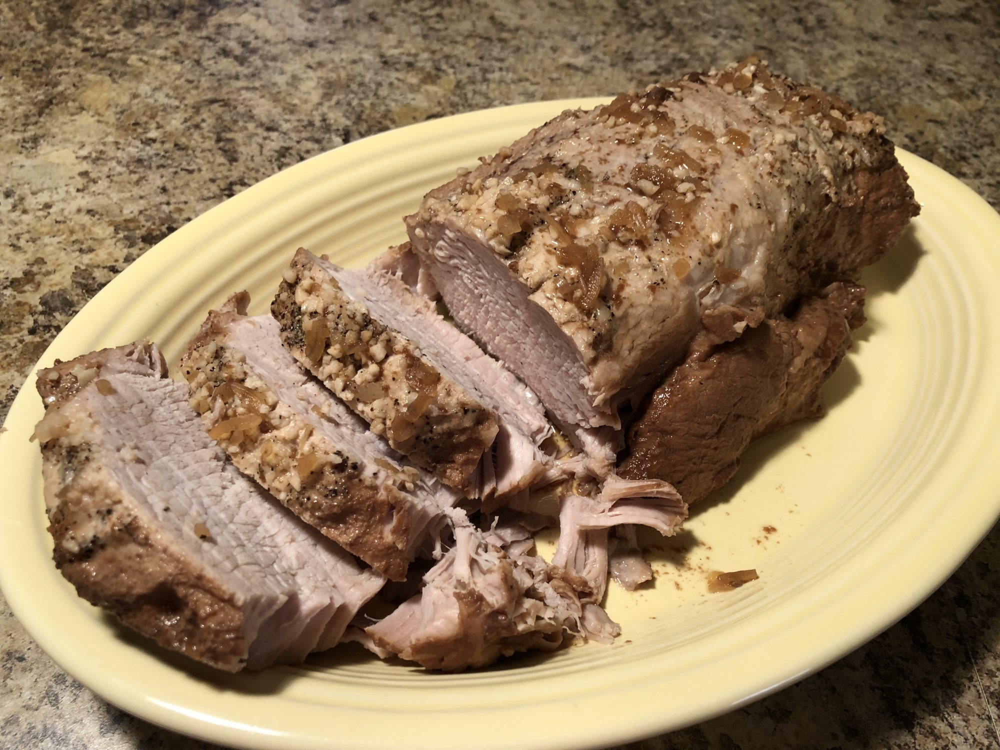

Pork Tenderloin Recipe

Pork Tenderloin Recipe
This crockpot pork tenderloin will melt in your mouth! The pork soaks up all
the yummy juices as it cooks. Make sure to serve the au jus on the side — it's
amazing. This recipe is so simple, you will love it!
Ingredients
- 1 (2 pound) pork tenderloin
- 1 (1 ounce) envelope dry onion soup mix
- 1 cup water
- ¾ cup red wine
- 3 tablespoons soy sauce
- 3 tablespoons minced garlic
- freshly ground black pepper to taste
Steps
- Place pork tenderloin and soup mix in a slow cooker. Pour water, wine,
nd soy sauce on top, turning pork to coat. Carefully spread garlic over
pork, leaving as much on top as possible. Sprinkle with pepper.
- Cover and cook on Low for 4 hours or until the internal temperature
reaches 145 degrees F (63 degrees C).
- Remove pork from the slow cooker and let rest for 10 minutes. Slice and
serve with cooking liquid on the side as au jus.